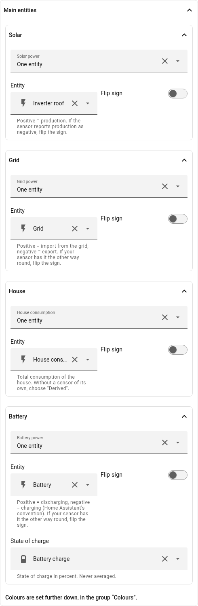
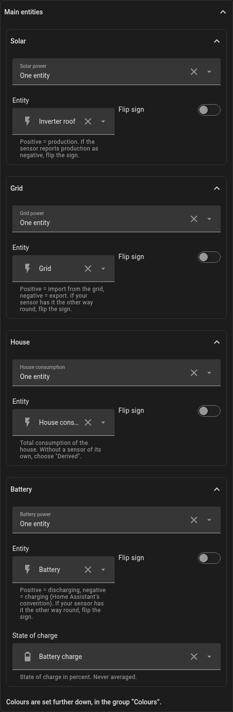
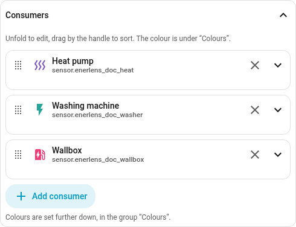
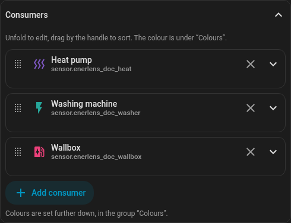
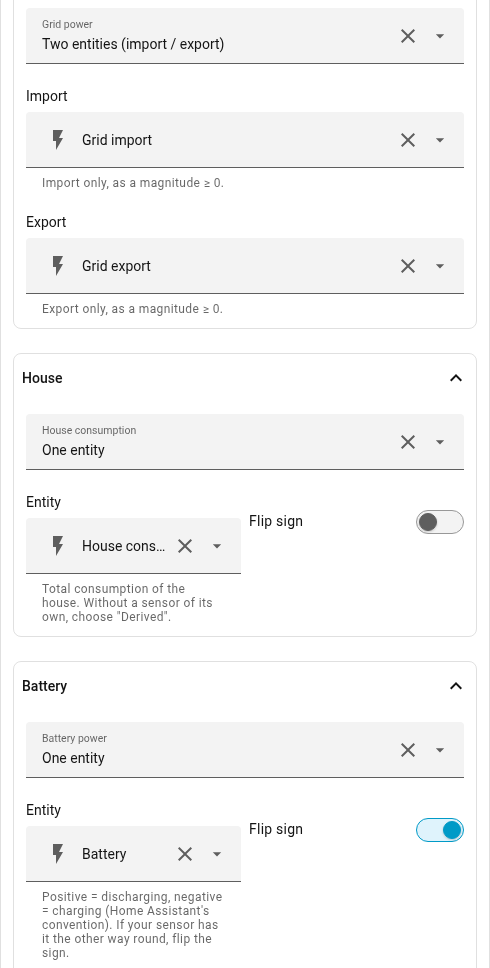
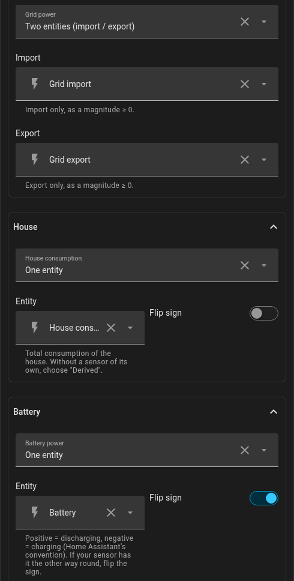

Setup
The card ships a GUI editor. Every entity form below — a single entity, an inverted one, two entities, or a derived quantity — is a choice in the form, so YAML is never required. Only the consumer palette stays YAML-only. The YAML is documented for people who prefer it.
A card added through the dashboard does not guess your sensors: it starts with
the placeholders sensor.solar_power and sensor.grid_power and shows example
values, marked as such, until you pick your own.
In the editor
Under Main entities you pick the power entity of solar, grid, house and battery. The choice above each sets its form: One entity, Two entities, Derived from the other quantities or, for solar, Several sources (one per inverter). With a battery, State of charge comes along.

The consumers have a list of their own below: Add consumer, pick the entity, done. Each entry unfolds for name, icon, a threshold of its own and a car’s state of charge; drag to change their order.


Minimal
type: custom:enerlens-card
entities:
solar: sensor.pv_power
grid: sensor.grid_power
house: sensor.house_consumptionWith a battery and consumers
type: custom:enerlens-card
title: Energy
entities:
solar: sensor.pv_power
grid: sensor.grid_power
house: sensor.house_consumption
battery: sensor.battery_power
battery_soc: sensor.battery_level
consumers:
- entity: sensor.heat_pump_power
name: Heat pump
- entity: sensor.washing_machine_power
- entity: sensor.fridge_power
max_consumers: 5Sign conventions
The card follows Home Assistant’s own convention, the same one
power-flow-card-plus and the energy dashboard use:
| Quantity | Positive | Negative |
|---|---|---|
|
import from the grid |
export |
|
discharging |
charging |
If your sensor reports the other way round — many inverters report export as a positive number — invert it per entity:
entities:
grid:
entity: sensor.grid_power
invert: trueIn the editor that is the switch Flip sign at the entity, or the choice Two entities for separate sensors:


If you have separate sensors per direction instead of one signed sensor, name both. Values are expected to be zero or positive:
entities:
grid:
import: sensor.grid_import
export: sensor.grid_export
battery:
discharge: sensor.battery_discharge
charge: sensor.battery_chargeOne entity or two? If your installation offers both — a signed sensor and a pair per direction — take the pair. A tap on grid or battery then opens a window with both directions in one chart: import or discharge upwards, export or charge downwards, and for the battery its state of charge below. In the power view it shows, like Home Assistant’s own history, the 5-minute mean and faintly the range from the lowest to the highest reading; in the energy mode the kWh per hour or day (see Energy). The energy mode, too, can only show both directions with a pair. With a signed sensor the tap opens that sensor’s own history in Home Assistant.